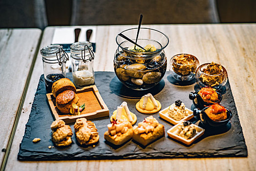
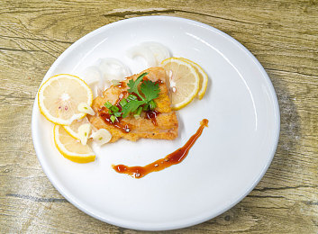
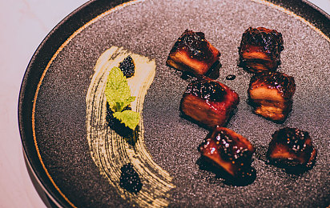

柠檬胡椒牛排
是以菲力牛肉、小蕃茄，熟芦笋，海盐，柠檬胡椒为原料制作而成
1.圣女小蕃茄对切；所有调味料拌匀，备用。
2.将作法1的调味料冷锅放入美国帕路亚七层钢平底锅中，再开小火放入菲力牛肉，煎约6分熟后取出。
3.摆盘时放上作法1的圣女小蕃茄和熟芦笋即可。
北京烤鸭
烤鸭是具有世界声誉的北京著名菜，起源于中国南北朝时期，《食珍录》中已记有炙鸭，在当时是宫廷名菜。
1、鸭于翼底外开一孔，取出肠脏（可请鸭档代劳），洗净，以配料涂匀鸭腔
2、用三寸长木条纳入鸭腔内，横挡于两翅骨间，插一支管在鸭头部，吹气使鸭全向澎涨。
3、用滚水淋鸭外皮至起凸点，煮溶淋鸭皮料，涂匀鸭皮挂在当风处吹干。

炭烧羊扒
炭烧羊扒选用新西兰羊颈，肉质鲜嫩，加上传统葡国香料，绝无膻味等。
1.羊扒对切，切块；所有调味料拌匀，备用。
2.将作法1的调味料冷锅放入七层钢平底锅中，再开小火放入菲力羊扒，煎约6分熟后取出。
3.放置炭烤炉中轻微烤至2分钟即刻
4.涂上黑露蘸酱。配合薄荷叶摆盘即可